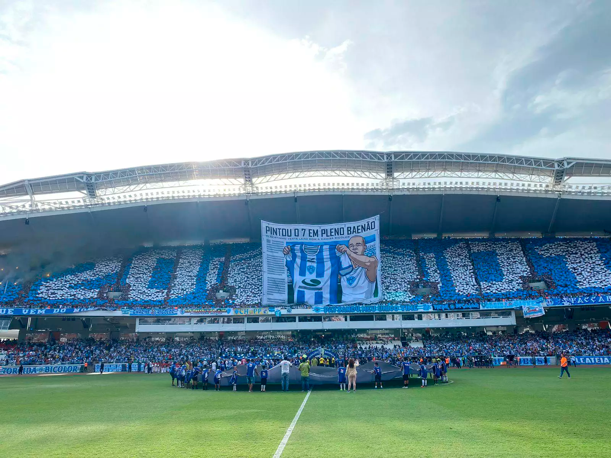
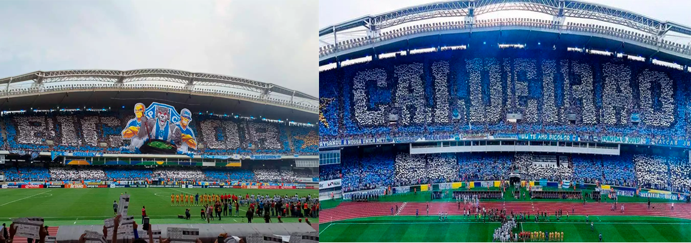
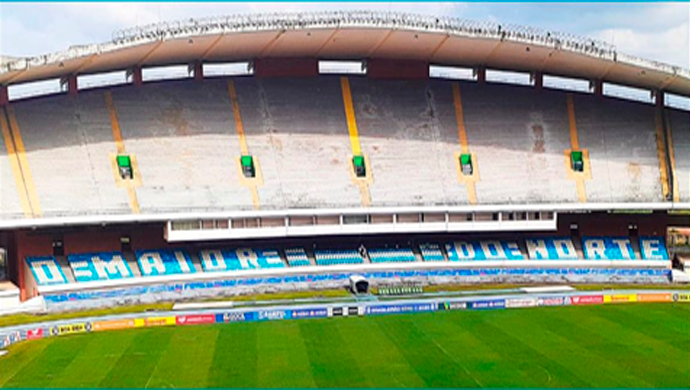
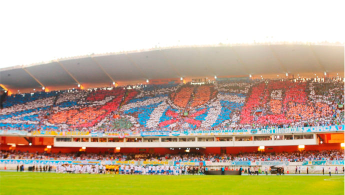
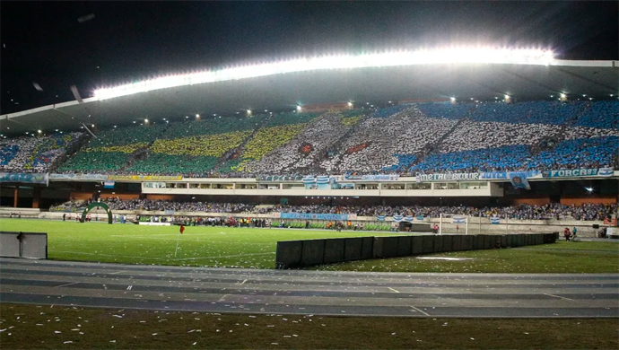
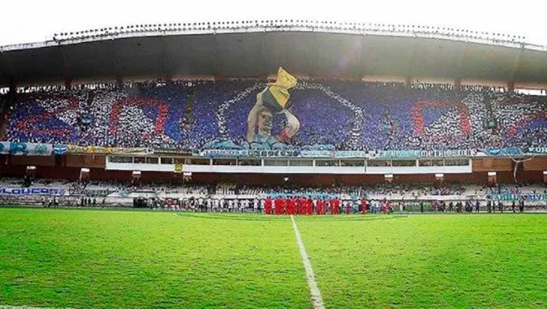
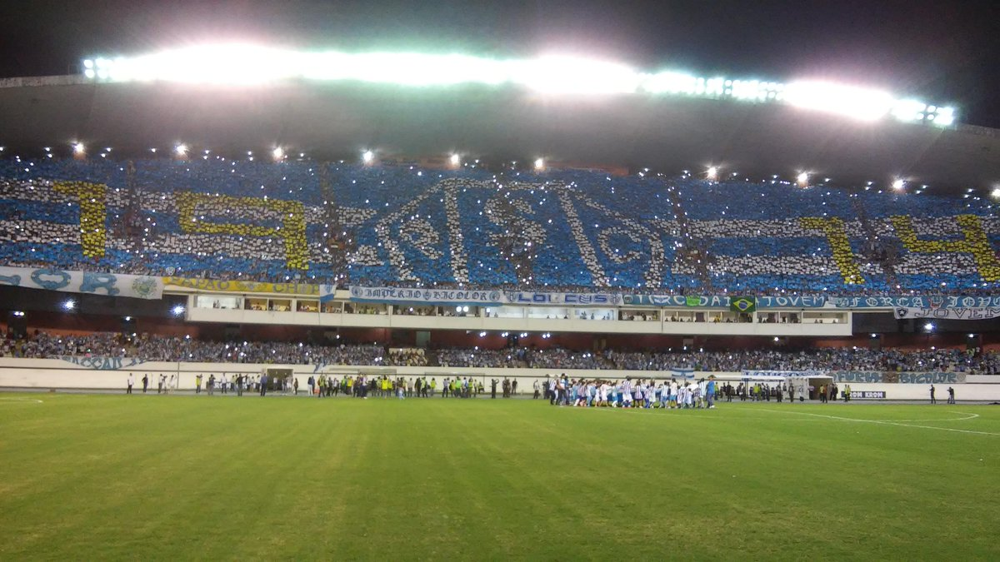
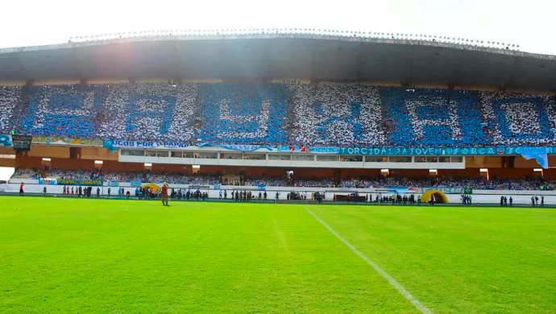

Paysandu 0x0 Acessório de canoa - Parazão 2024
Data: 04 de fevereiro de 2024
Público: 48.180

Paysandu 1x2 Amazonas - Série C 2023
Data: 01 de setembro de 2023
Público: 49.807

Paysandu 1x0 Botafogo-PB - Série C 2023
Data: 17 de janeiro de 2023
Público: 43.794

Paysandu 0x1 Acessório de canoa - Parazão 2021
Data: 10 de janeiro de 2021
Público: 0 (pandêmia)

Paysandu 2x3 Acessório de canoa - Final Parazão 2020
Data: 03 de outubro de 2020
Público: 0 (pandêmia)

Paysandu 1x1 Acessório de canoa - Final Parazão 2017
Data: 25 de agosto 2019
Público: 31.306

Paysandu 1x1 Atlético-ES - Final da Copa verde 2018
Data: 16 de maio de 2018
Público: 34.893

Paysandu 1x1 Luverdense - Final da Copa verde 2017
Data: 16 de maio de 2017
Público: 28.553

Paysandu 2x1 Acessório de canoa - Final Parazão 2017
Data: 07 de maio de 2017
Público: 34.320

Paysandu 2x0 Gama - Final da Copa Verde 2016
Data: 03 de maio de 2016
Público: 26.610

Paysandu 1x2 Fluminense - Copa do Brasil 2015
Data: 26 de agosto de 2015
Público: 33.911
